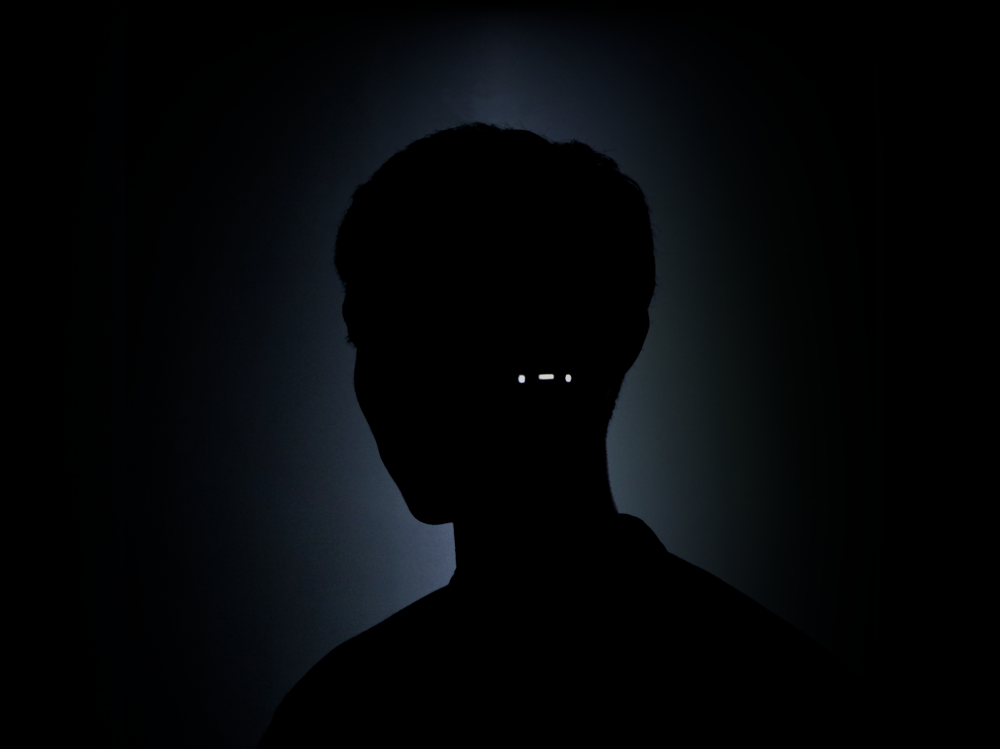

WYXX는 단위와 규칙, 논리를 기반한 작품을 제작한다.
세상의 형태는 복잡계와 유사한 형태로 그 속에 놓인 인간은 혼돈 속에서 길을 잃은 것과 같다.
그는 이러한 혼돈 속에서 단위, 규칙, 논리를 정립하고
그것들의 관계에서 파생되는 생성과 전개의 과정을 통해 구조의 미학과 새로운 방향성을 제시한다.
WYXX는 서울을 기반으로 활동하며 Sound, Media, Algorithm, Image 등
다양한 매체를 이용하여 작품을 제작하고 있다.
2019년을 시작으로 <WeSA Festival, 2020/2021>, <PRECTXED:SHOWCASE, 2020>,
<Digital Narcosis, 2020> 등 퍼포먼스 및 전시에 참여하였으며
프로듀싱 및 음반 발매, Insula Plantis 등 다양한 활동을 이어오고 있다.
WYXX produces works based on units, rules, and logic.
The shape of the world is similar to that of the complex system,
and humans in it are lost in the chaos. He establishes units, rules,
and logic in this chaos and presents the aesthetics and
new directions of the structure through the process of generation
and development in their relationships.
WYXX is based in Seoul and produces works using various media such as
Sound, Media, Algorithm, and Image. Starting in 2019,
he participated in performances and exhibitions such as
<WeSA Festival, 2020/2021>, <PRECTXED: SHOWCASE, 2020>
and <Digital Narcosis, 2020>, and has continued various
activities such as production, album release, and Insula Plantis.